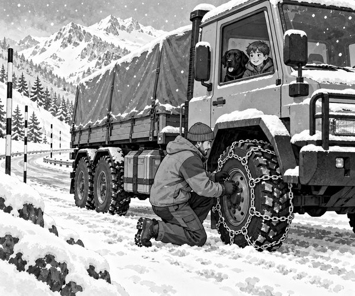

FICTION
Snow fell over Greycap Mountain.
It covered the trees.
It covered the rocks.
It began to cover the road.
Dad's six-wheel truck waited at the mountain depot.
A heavy crate was strapped beneath its cover.
Inside was a new battery for the weather beacon.
The beacon stood at High Pass Station.
It sent wind and snow readings to the valley.
Its old battery was almost empty.
Tom climbed into the warm cab.
Scout settled behind the seats.
Dad checked the straps around the crate.
Then the whiteout beacon run began.
At first, the road was easy to see.
Dark trees stood on both sides.
The tyres crunched over fresh snow.
Higher up, the wind grew stronger.
Loose snow swept across the road.
The truck reached a wide, flat lay-by.
Dad stopped well away from the bend.
He set the brake and switched off the engine.
“The snow is packed hard above here,” he said.
“It is time for the chains.”
Tom and Scout waited safely in the cab.
Dad wrapped strong metal chains around the driving tyres.
He fastened each one tightly.
Then he checked them again.
Snow fact: Tyre chains add hard metal edges around a tyre. The edges can bite into packed snow and ice to give extra grip.
Dad climbed back inside.
He selected a low gear.
The truck moved off gently.
Clink. Crunch. Clink.
The chained tyres held the road.
Then the clouds dropped lower.
Snow filled the windscreen.
The trees disappeared.
The rocks disappeared.
Even the road seemed to disappear.
“I can only see white,” Tom said.
Dad slowed to walking speed.
He did not guess where the road went.
He looked for the tall black-and-white poles.
One pole stood beside the left edge.
Another stood beside the right edge.
Two more appeared through the snow.
Road fact: Tall snow poles show drivers where a mountain road runs. The tops can stay visible when deep snow hides the road edge.
Dad kept the truck between the poles.
He drove from one pair to the next.
Slowly, the road turned around the mountain.
The chains kept biting.
The crate stayed firm beneath its straps.
At last, a square shadow appeared ahead.
It was High Pass Station.
Ranger Mia opened the big shed door.
Dad backed the truck inside.
The storm roared outside.
Inside, the team opened the crate.
They fitted the new battery to the beacon.
A green lamp blinked.
Fresh weather readings travelled down to the valley.
Tom looked through the snowy window.
“We could not see the whole road,” he said.
Dad smiled.
“We only needed to find the next safe marker.”
Scout gave one happy bark.
The whiteout beacon run was complete.
1. What was the truck carrying?
2. Why did Dad stop at the lay-by?
3. What showed the edge of the road?